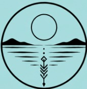
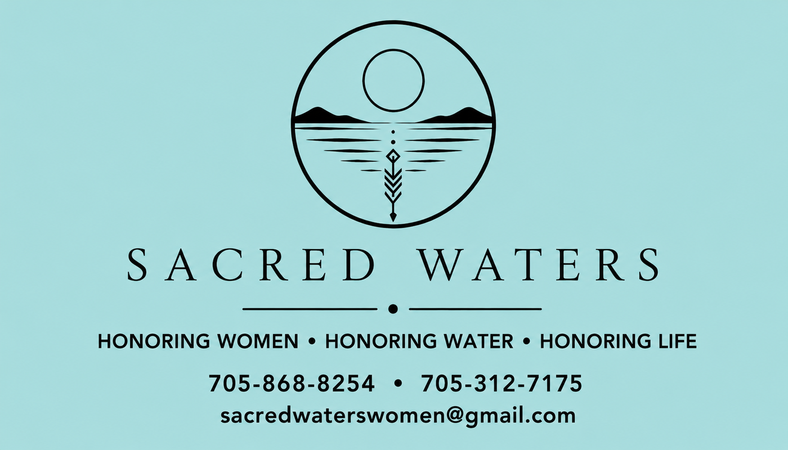
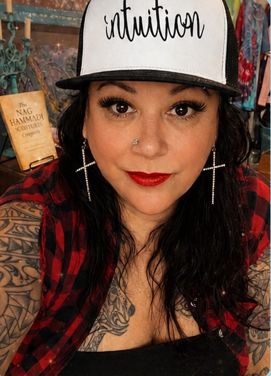
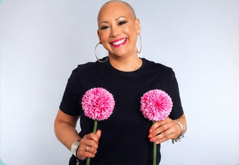
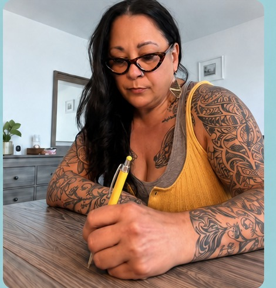
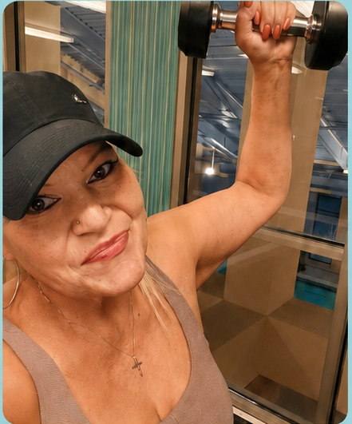
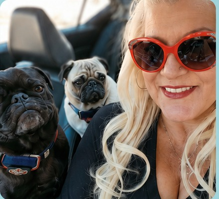
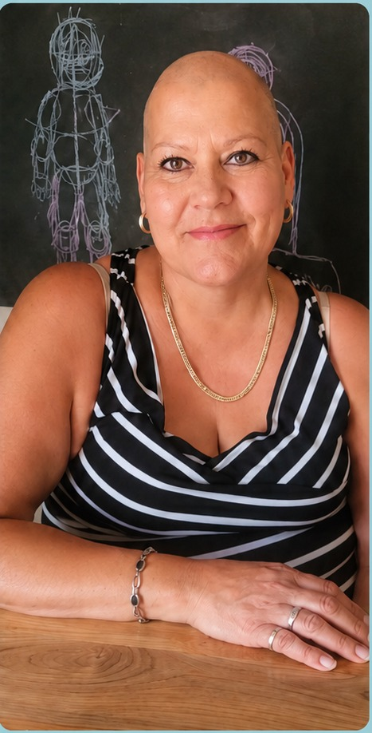
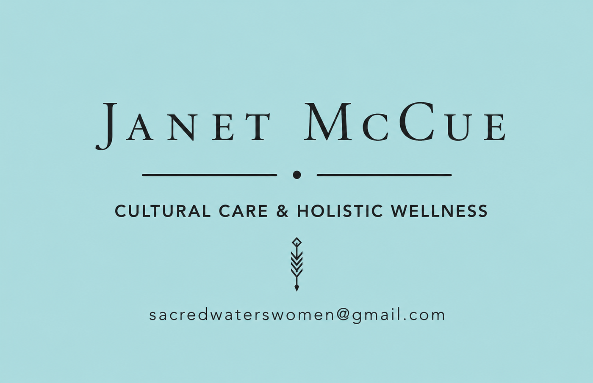

Expressive Art Wellness Sessions
Guided creative and reflective sessions using art, colour, writing, and conversation to support emotional expression, insight, healing, and growth. No artistic experience required.

Sacred WatersWomen’s wellness & healingHonouring Women • Honouring Water • Honouring Life
Sacred Waters supports women through expressive art, holistic wellness treatments, spiritual reflection, personal growth experiences, and community-based programming.
Primary contacts: Michaela DeCarlo at 705-868-8254 and Linda Gagnon at 705-312-7175.

Sacred Waters is creating a welcoming place where women can feel accepted, supported and free to explore the deeper parts of themselves. Here, they can do the meaningful inner work of revisiting what has shaped them, expressing what has been held inside, tending to what still needs care and growing into a deeper understanding of who they are.
Our services are designed for women who want more than surface-level self-care. Through one-to-one and small-group personal growth work, guided reflection, supportive conversation, creative and intuitive art-making, cultural and spiritual care and deeply relaxing body-based wellness services, women are given space to explore their emotions, life experiences, relationships, patterns and personal struggles.
Sacred Waters offers a calm, non-clinical setting where women can begin to understand themselves more deeply, release what they have been carrying and reconnect with their own voice, strength and inner wisdom. Some women may come seeking healing after difficult experiences, grief, loss, burnout or major life changes. Others may simply know that something within them is ready to be acknowledged, understood and transformed.
Sacred Waters founders Michaela DeCarlo and Linda Gagnon carry their own stories of challenge, healing, growth and renewal into the work they offer to other women. Their lived experiences have shaped a deep understanding that women need places where they can feel accepted, look honestly at what they have lived through, reconnect with themselves and begin moving toward healing in their own time.
We believe every woman carries her own story, her own wisdom and her own capacity for healing, growth and renewal. We also believe women need support while working through what they have lived, felt and carried. They need safe, respectful spaces where they can be honest, open and fully themselves without fear of judgement, pressure or having to hide the parts of their story that still need care.
Healing does not always happen in a straight line, and it does not look the same for every woman. Sometimes it begins through words and reflection. Sometimes it begins through creativity, cultural connection, spiritual care, rest, touch or simply feeling safe enough to listen to what has been waiting within.
Sacred Waters honours the whole woman, including her body, mind, emotions, creativity, culture, spirit and lived experience. Our philosophy is shaped by Indigenous ways of knowing, Christian spiritual beliefs and a respect for the many ways people seek meaning, guidance and connection.
We believe each woman should be free to connect with her own spirituality in the way that feels true to her, whether that is through culture, faith, prayer, intuition, traditional teachings, personal reflection or another spiritual path. Our role is not to tell women what to believe or who they should become, but to create meaningful space for them to explore who they are, understand what has shaped them and move forward in a way that honours their own values, beliefs and path.
Services
Programs can be customized for individuals, small groups, organizations, workplaces, conferences, and community events.
Guided creative and reflective sessions using art, colour, writing, and conversation to support emotional expression, insight, healing, and growth. No artistic experience required.
An ASMR-inspired crown-to-hands relaxation treatment with gentle hair brushing, scalp massage, soothing facial and neck touch, and hand massage for deep rest.
One-to-one or small-group sessions using guided reflection, supportive conversation, creative expression, and wellness education.
A deeply relaxing body-based treatment with soothing touch, guided imagery, and reflection honouring the physical, emotional, mental, and spiritual self.
A spiritually guided full-body relaxation massage experience with intuitive touch, energy work, grounding, prayer, and Indigenous song.
Eyelash extensions, lash lifts, hair extensions, individualized hair consultations, and thoughtful care for women who have experienced chemotherapy-related hair loss.
Meet the partners
Contact Sacred Waters for a personalized quote for individual sessions, small groups, organizations, workplaces, conferences, community events, or travelling wellness programming.



Cancer survivor • Founder
Founder & Director of Program Development
I was born to an Indigenous teenage mother and a young Italian father, inheriting two rich cultures, two different histories, and what would become a lifelong journey of understanding where I belonged.
I spent much of my life walking between worlds.
I was the brown kid in a lot of white spaces long before people were having the conversations about diversity, inclusion, identity, and belonging that we have today. I carried both my Indigenous and Italian roots while often trying to understand where I fit within either one.
Then there was religion.
I grew up first as a Jehovah’s Witness and later in a strict Pentecostal church.
Skirts. Long hair. Rules.
Lots of rules.
Christmas wasn’t celebrated in our home until I was eleven, although my Grandma Louie had a habit of quietly sneaking me Christmas presents before then anyway.
Looking back, I understand that my parents were spiritual seekers themselves. They were searching for truth, meaning, God, and a way to understand this life. Their own journey continued to evolve, and today their ministry is grounded in love, faith, compassion, beauty, and service to others.
My own journey took a less direct route.
I’ve always been the one asking questions. The one wondering why. The one seeing something from an angle nobody else seemed to be looking from.
The one who could never quite make herself smaller, quieter, or more conventional just to fit the version of who other people thought she should be.
Of course, while everyone was busy worrying about saving my soul, little did they know I was kissing Louis Marini under the stage after worship service.
This chapter strengthened my purpose and softened my heart.
Today, I bring lived experience, education, intuition, creativity, energy work, humour, faith, curiosity, stubbornness, and a deep understanding of the complicated lives women live.
I am also a poet and writer, and writing has always been one of the ways I make sense of both myself and the world around me.
I understand what it means to carry responsibility. To lose pieces of yourself while caring for everyone else. To question what you were taught. To search through culture, tradition, faith, spirituality, and lived experience for the things that still feel true. To begin again. To change your mind. To survive something you thought might destroy you. And to discover that underneath everything you have lived through, there is still a part of you waiting to be heard.
I believe there is a God, a Creator, a Divine Presence, something greater than ourselves.
I also believe our relationships with culture, tradition, spirituality, faith, and the sacred are deeply personal.
Some women speak of God. Some speak of Creator. Some find meaning through Christian faith, Indigenous teachings, cultural traditions, ceremony, nature, prayer, intuition, creativity, community, energy, or something they do not yet have a name for.
I do not believe anyone else gets to define that relationship for you.
I believe women are intuitive.
For me, one of the strongest expressions of that intuition has always been writing.
As a poet and writer, I have learned that words can reach places ordinary conversation sometimes cannot. I also practise automatic writing, allowing words, thoughts, images, questions, and ideas to emerge before my analytical mind has the chance to organize or censor them.
Sometimes what comes through surprises me. Sometimes I understand it immediately, and sometimes its meaning reveals itself much later.
I do not need to have a perfect explanation for where every word comes from. I have learned to respect the space between intuition, creativity, memory, spirit, energy, and the deeper parts of ourselves that we do not always reach through ordinary thinking.
Automatic writing has taught me something important: There is a difference between thinking about ourselves and listening to ourselves.
Michaela also writes poetry and personal reflections exploring womanhood, intuition, spirituality, identity, healing, and the beautifully complicated experience of being human.
She is also a social media creator who believes there is more than one way to tell the truth. On TikTok, Michaela uses humour, boldness, satire, storytelling, and sometimes the kind of unfiltered truth that lands right in the middle of the room. At other times, she speaks openly about sadness, struggle, aging, relationships, womanhood, healing, and the parts of life that are not always easy to make beautiful.
Her Facebook presence carries that same mixture of humour, reflection, creativity, honesty, and real life. Michaela believes women’s stories do not have to be polished to have value. Sometimes laughter is medicine. Sometimes truth is uncomfortable. Sometimes sadness needs a place to exist. Sometimes helping another woman begins by being willing to stand in your own truth and say, “This is me.”
Search Substack: Michaela DeCarlo • TikTok: @meltdownmomma • Facebook: Michaela Maria DeCarlo



Partner • Communications & Operations
Founder & Director of Communications and Operations
I am an Algonquin Indigenous woman whose life has been shaped by resilience, faith, family, perseverance, and an enduring belief that our beginnings do not have to determine our endings.
Like many Indigenous families, mine was touched by addiction, trauma, family separation, and the lasting impacts of the Sixties Scoop. At seven years old, I became a Crown ward and entered the foster care system, where I remained until I was eighteen. Twice, I tried to return home. Twice, it did not work out. I was separated from my seven siblings and grew up carrying many of the losses, questions, and loneliness that children in care know all too well.
My relationship with my mother was especially difficult. She struggled with addiction and was physically and emotionally abusive toward me. After she passed away, I prayed for the ability to forgive her. It took a year. Forgiveness did not come because the pain disappeared. It came through prayer, reflection, grief, anger, and the understanding that continuing to carry what had been done to me was allowing the past to keep occupying my heart.
I also survived sexual abuse within the foster care system as a Sixties Scoop survivor, and later, domestic violence. Today, I share parts of my story because silence no longer serves me. Those experiences are part of my life, but they are not the definition of my life. I found my voice, and I believe something powerful happens when women find theirs.
At sixteen years old, I gave my life to Jesus. My faith became an anchor through uncertain years of my life. It reminded me that I was loved, that I had worth, and that my life could still have purpose.
Throughout my adult life, I have been a worker, caregiver, mother, friend, and supporter of others. I spent much of my career in social services, helping people navigate difficult circumstances while drawing from both professional and lived experience.
Forgiveness did not change my history. It changed what my history was allowed to continue doing to me.
I became a mother to five children. Creating a stable home mattered deeply to me because I understood what it felt like to grow up without one. But stable did not mean perfect. Motherhood taught me love, humility, worry, laughter, pride, and how intergenerational trauma can move through families. I navigated those realities as best I could with the faith, understanding, and strength I had at the time.
Through hard work, determination, and faith, I became a homeowner and created a home of my own. The little girl who once moved through the foster care system became a woman capable of creating the stability she had once longed for.
Then came another battle. I was diagnosed with Stage 4 breast cancer. Cancer confronted me with fear, uncertainty, depression, and deep questions about what my life meant. There were times when I prayed, “Dear God, why didn’t you take me when I was sick? Why didn’t you take me? What is my purpose?” I learned that faith is not only certainty. Sometimes it is prayer, questioning, and waiting for an answer you cannot yet see.
I have also been touched by suicide through people I have known and loved. Those experiences are not the centre of my story, but they have deepened my compassion for women and families carrying grief, fear, helplessness, and difficult questions.
Today, Sacred Waters feels connected to the question I once asked God about why I am still here. I have invested my heart, my faith, my experiences, and my sense of purpose into what we are building. I feel peace about moving forward and helping create something intentional for women.
I know women need places where they can be honest. Places where they can care for themselves without guilt. Places for reflection, conversation, encouragement, laughter, spirituality, rest, creativity, and connection.
I also know healing does not look the same for every woman. My Christian faith is central to my life, but I do not need another woman to believe exactly what I believe in order to respect her path. I know what it feels like when other people and systems make decisions about your life. Because of that, I believe deeply in a woman’s right to have a voice in her own healing and wellness journey. I can stand firmly in my faith while honouring another woman’s beliefs.
As Co-Founder and Director of Communications and Operations, I bring my professional experience to Sacred Waters, but I also bring everything life has taught me: the foster child, the survivor, the mother who loved deeply and learned along the way, the social worker, the woman of faith, the cancer survivor, the woman who questioned her purpose, the woman who learned forgiveness, and the woman who found her voice.
I believe in the power of faith. I believe in the strength of women. I believe our stories deserve to be heard. I believe voices can be recognized and changed. I believe women can support one another without having to be exactly alike. I believe hope can survive things we once thought would destroy it. And I believe healing is possible.
Perhaps some of the experiences I once asked God why I survived are becoming part of the answer to why I am still here.
Sacred Waters is one more way I have chosen to find out.

Cultural Care • Holistic Wellness
Cultural Care & Holistic Wellness
Janet is listed in the Sacred Waters materials for cultural care and holistic wellness, supporting grounded, respectful, women-centred experiences for healing, reflection, and rest.
Care that honours the whole woman — body, spirit, story, and season.
Travel & community programming
Get a quote
Tell us what you’re planning, how many people you’re supporting, where the service will take place, and the kind of experience you’re looking for.